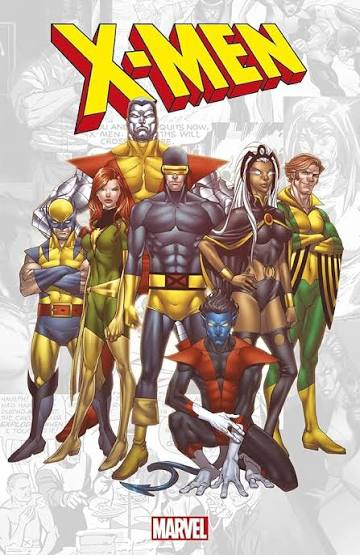

Los X-Men: Héroes Mutantes

Los X-Men son un equipo de superhéroes mutantes fundado por el Profesor Charles Xavier. Su objetivo principal es luchar por la paz y la igualdad entre humanos y mutantes en un mundo que los odia y los teme. Entre sus miembros más destacados se encuentran Wolverine, Cyclops, Jean Grey y Storm, quienes usan sus asombrosas habilidades para proteger a la humanidad.
La Escuela para Jóvenes Talentos del Profesor X, ubicada en Westchester, Nueva York, sirve como un refugio seguro. Aquí, los jóvenes mutantes aprenden a controlar sus poderes y a convivir en sociedad. A lo largo de los años, se han enfrentado a innumerables amenazas, desde su némesis Magneto y la Hermandad de Mutantes, hasta fuerzas cósmicas destructivas.
A pesar del rechazo constante de la sociedad, los X-Men nunca se rinden. Representan la lucha constante contra el prejuicio y la discriminación, demostrando que nuestras diferencias son, en realidad, nuestra mayor fortaleza.